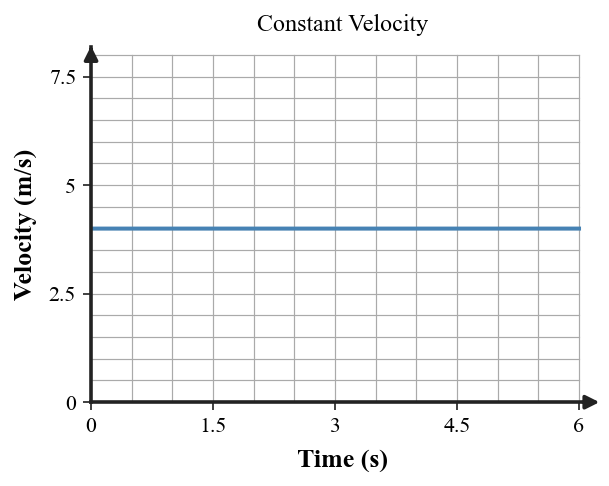

Equilibrium and Balanced Motion
Core idea: Mechanical equilibrium means the vector sum of all forces is zero; the object’s velocity therefore remains unchanged.
You will distinguish static and dynamic equilibrium, use $\Sigma F=0$, and check whether a motion description is actually consistent with zero net force.
Learning Target
Students will determine whether an object is in mechanical equilibrium and explain how balanced forces relate to rest or constant straight-line motion.
I can statements
- I can recognize static equilibrium and dynamic equilibrium.
- I can explain why an object at rest can still have forces acting on it.
- I can explain why an object moving at constant speed in a straight line can be in equilibrium and use the equilibrium rule to reason about upward/downward and left/right forces.
Vocabulary Preview
Skim the terms first. In the blank space, jot a word, example, picture, or question you already connect to each term. Definitions come later.
| Term | Before the reading: my connection / question |
|---|---|
| mechanical equilibrium | |
| static equilibrium | |
| dynamic equilibrium | |
| balanced forces | |
| constant velocity |
What's To Come
This is a long-range preview for this section. Do not solve it yet. Circle anything familiar, underline symbols, labels, conditions, data, or features that seem important, and write short notes about what you think may matter later.
Consider four objects: a mug resting on a desk, a puck gliding straight at steady speed on nearly frictionless ice, a car moving around a circular track at steady speed, and a hanging lamp at rest.
Which cases might share the same net-force condition? Record a prediction and the evidence you would need to defend it later.
Content: Read, Represent, Annotate, Apply
Directions
Read in short chunks. Annotate the prose and representations together. Mark evidence, conditions, important quantities, labels, patterns, and questions.
Reading 1: Mechanical Equilibrium Means Zero Net Force
Mechanical equilibrium occurs when the vector sum of the forces on an object is zero. The forces do not have to disappear. Instead, the upward/downward and left/right contributions balance so that the overall result is zero.
For a hanging or supported object at rest, the equilibrium rule can be seen directly in the force arrows. The source scaffold diagram shows upward support tensions balancing the combined downward weights.

Mechanical equilibrium requires $$\Sigma F=0.$$
In one dimension, choose a positive direction and add signed force components. In two dimensions, the forces must balance independently in the horizontal and vertical directions.
Stop and Discuss
- What does $\Sigma F=0$ tell you about the net force? What does it not tell you about each individual force?
- For a lamp hanging motionless, how must upward tension compare with downward weight?
Example 1: Balance Tension and Weight
A lamp hangs at rest. The cable tension is 64 N upward. What must the lamp weight be for equilibrium?
You Try It 1: Find a Supporting Tension
A 90 N sign hangs at rest from a vertical cable. What tension is required?
Reading 2: Static and Dynamic Equilibrium
Static equilibrium describes an object at rest with zero net force. Dynamic equilibrium describes an object moving with constant velocity while the net force remains zero. These motion states look different, but both satisfy Newton's First Law because the velocity does not change.

The word velocity includes direction. Constant speed in a straight line is constant velocity; constant speed while turning is not, because the direction changes.
Stop and Discuss
- What force condition is shared by a mug at rest and a cart moving straight at constant velocity?
- Why is “constant speed” not enough by itself to prove dynamic equilibrium?
Example 2: Recognize Dynamic Equilibrium
A train travels east in a straight line at constant velocity. What net force is consistent with this motion?
You Try It 2: Explain Equilibrium While Moving
A cart moves west at constant speed in a straight line. Explain why this can be equilibrium even though the cart is moving.
Reading 3: Balance Must Hold in Every Direction
Balanced forces mean the vector sum is zero. In a force diagram, you can test this one direction at a time. Horizontal forces must cancel one another, and vertical forces must cancel one another, for the full two-dimensional net force to be zero.

Motion evidence is the final consistency check. A car moving around a circular track may keep the same speed, but its direction changes continuously. Since its velocity changes, its force model cannot have a zero net force. By contrast, straight-line constant-speed motion can be consistent with equilibrium.
Stop and Discuss
- Can two support forces be unequal and still produce equilibrium? What must their combined effect do?
- Which part of velocity changes when an object turns at constant speed? What does that imply about net force?
Example 3: Verify Balanced Horizontal Forces
A box is pushed 35 N right while friction is 35 N left. Classify the horizontal forces and state the net horizontal force.
You Try It 3: State the Equilibrium Rule
A 48 N rightward force and a 48 N leftward force act on an object. If its vertical forces also balance, what equilibrium condition is satisfied?
Example 4: Distinguish Constant Speed from Constant Velocity
A car moves around a circular track at constant speed. Is constant speed alone enough to prove equilibrium? Explain.
You Try It 4: Check the Direction Condition
A bicycle moves straight ahead with constant speed. What additional condition must hold for mechanical equilibrium?
Vocabulary Definitions
| Term | Meaning in this section |
|---|---|
| mechanical equilibrium | A force condition in which the vector sum of all forces on the object is zero. |
| static equilibrium | Mechanical equilibrium while the object remains at rest. |
| dynamic equilibrium | Mechanical equilibrium while the object moves with constant velocity. |
| balanced forces | Forces whose vector sum is zero. |
| constant velocity | Motion with unchanged speed and unchanged direction. |
Summary
- Mechanical equilibrium means $\Sigma F=0$, not that no forces act.
- Static equilibrium is rest with zero net force; dynamic equilibrium is constant velocity with zero net force.
- Force balance must hold in each direction, not just in the diagram as a whole.
- Individual forces can be unequal and still combine to a zero resultant.
- Constant speed while turning is not equilibrium because the velocity direction changes.
Common Mistakes
| Mistake | Why it is tempting | Check instead |
|---|---|---|
| “Equilibrium means no forces.” | The object may look inactive. | Look for nonzero forces that cancel in the vector sum. |
| “Equilibrium means the object is at rest.” | Static equilibrium is the first example students meet. | Remember dynamic equilibrium: constant straight-line velocity also has zero net force. |
| Assuming every support force must be equal. | Symmetric examples often have equal supports. | Check the vector sum; unequal forces can still combine to the required balance. |
| Using constant speed as proof of equilibrium. | Speed is easy to observe. | Check direction too; constant velocity requires both speed and direction to stay unchanged. |